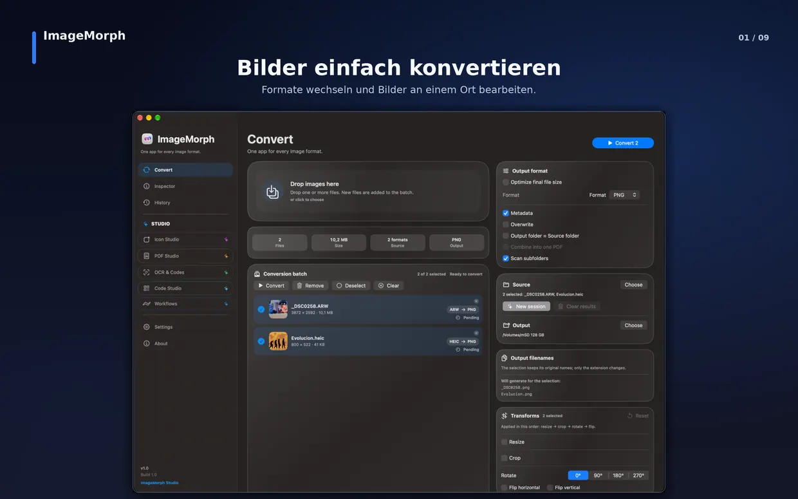
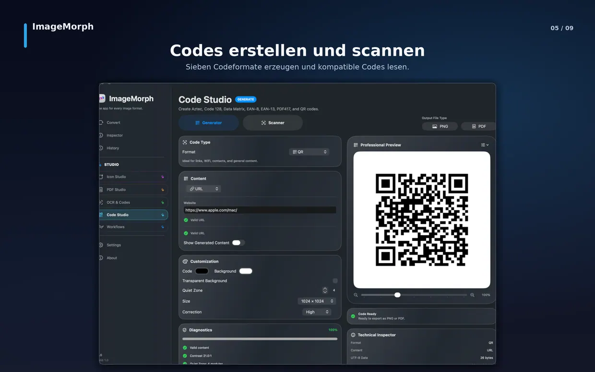
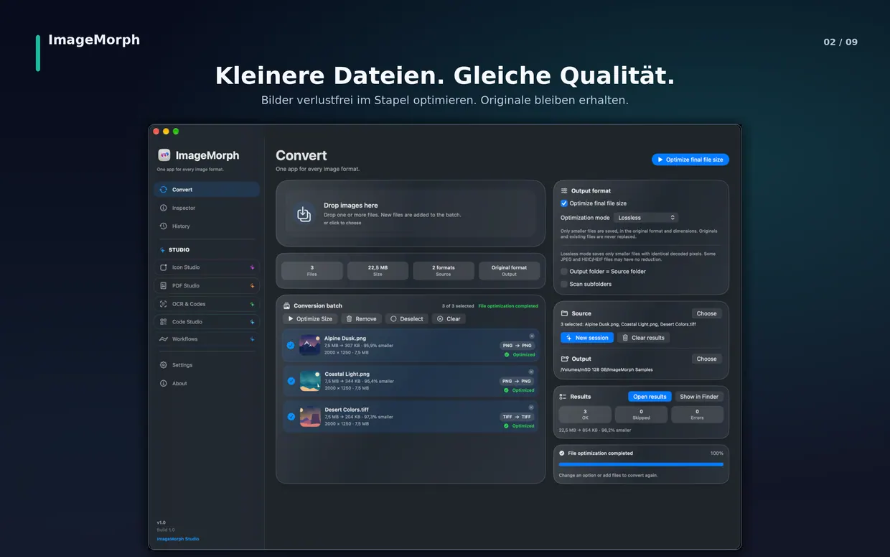
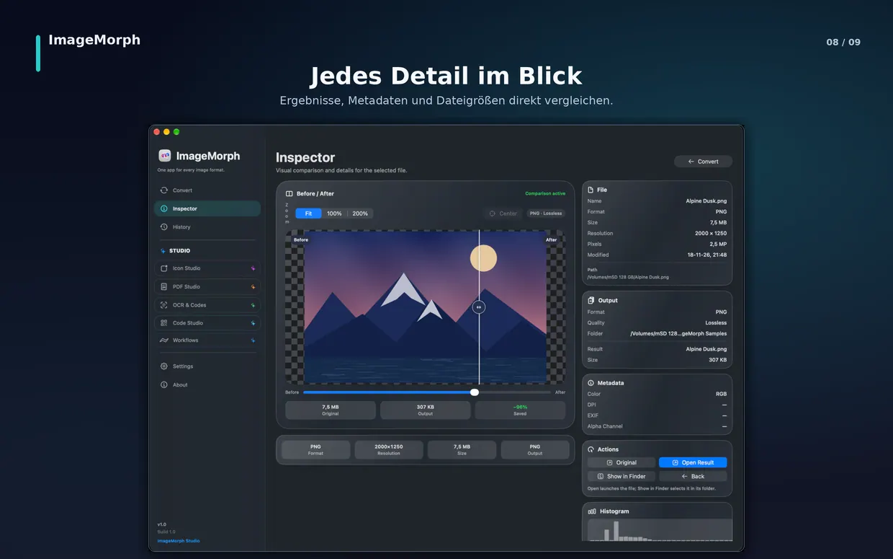
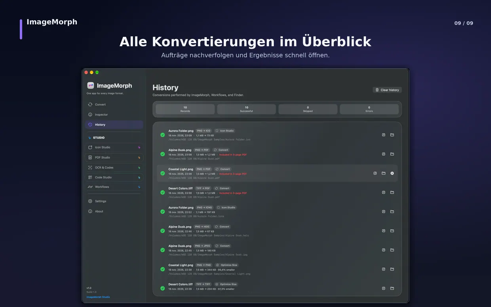
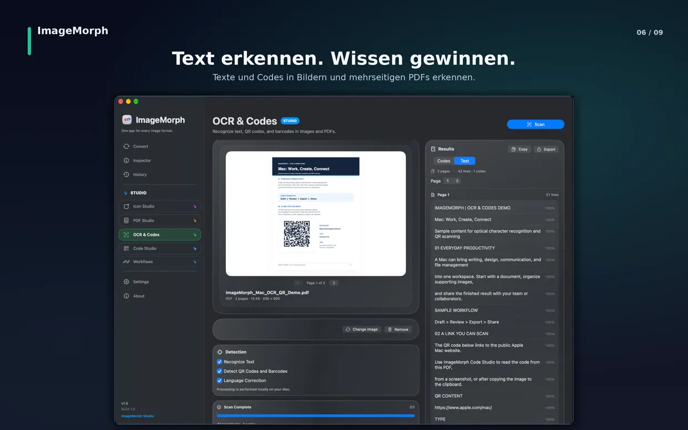
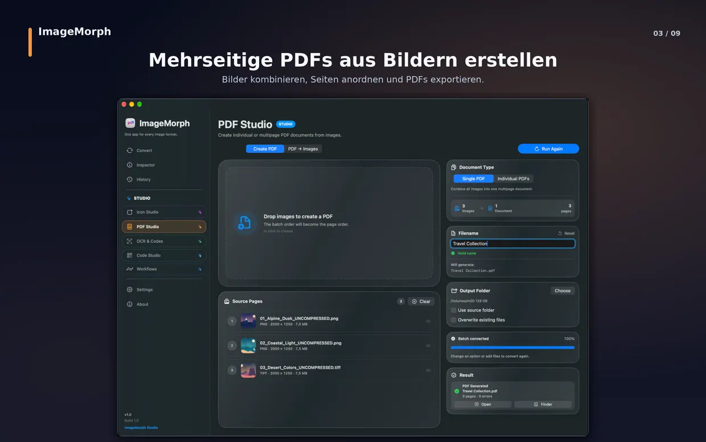
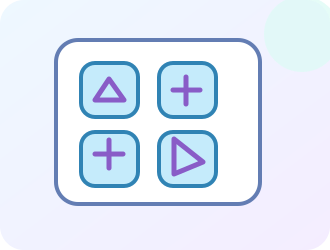
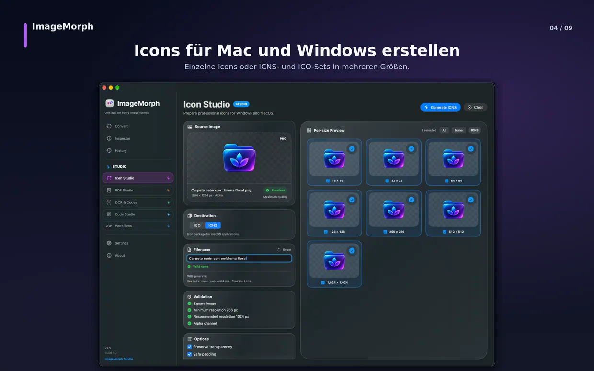
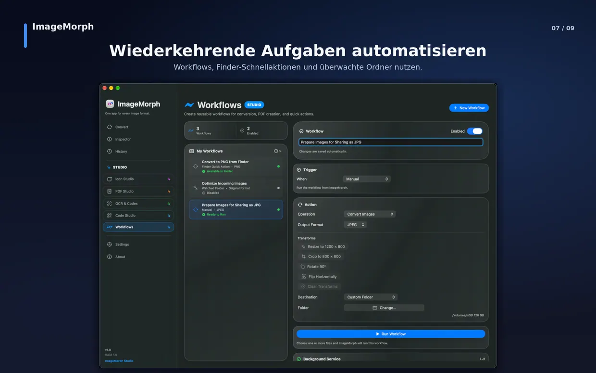

JPEG · PNG · HEIC · TIFF
JPEG, PNG, HEIC und TIFF einzeln oder stapelweise verarbeiten.

Bilder konvertieren, skalieren und optimieren. PDFs erstellen und wiederkehrende Aufgaben auf dem Mac automatisieren.
Mac-App-Store-Veröffentlichung in Vorbereitung.

Bilder konvertieren, skalieren und optimieren. PDFs erstellen und wiederkehrende Aufgaben auf dem Mac automatisieren.

Text in Bildern und mehrseitigen PDFs erkennen, prüfen und exportieren.
Lies QR-Codes aus E-Mails, Bildern oder PDFs auf deinem Mac und prüfe die Zieladresse, bevor du sie öffnest.


Eine URL-Vorschau garantiert keine sichere Website. Prüfe die Domain und gib auf unerwarteten Seiten keine persönlichen Daten ein.
Code-Werkzeuge ansehenJPEG, PNG, HEIC und TIFF einzeln oder stapelweise verarbeiten.

Ändere Bildabmessungen und Proportionen für verschiedene Zwecke. Bei Bedarf bleibt das Seitenverhältnis erhalten.

Verlustfreie oder unterstützte verlustbehaftete Optimierung; Ausgabe nur wenn kleiner.

Prüfe Format, Abmessungen und Metadaten. Nach der Konvertierung kannst du Original und Ergebnis vergleichen.

Prüfe frühere Vorgänge und öffne die Ergebnisdateien oder zeige sie im Finder, sofern sie noch vorhanden sind.

Studio vereint OCR, Code-Erkennung, PDF-Werkzeuge, Icons und Automatisierung. Einmaliger Kauf, kein Abo.
Studio ist ein optionaler, dauerhafter In-App-Kauf.

Text in Bildern und mehrseitigen PDFs erkennen, prüfen und exportieren.


Lies Codes aus der Zwischenablage, Bildern, PDFs oder Ordnern oder erfasse sie mit kompatiblen Kameras und Scannern. Prüfe Inhalte und Zieladressen vor dem Öffnen.


Mehrseitige PDFs erstellen, Seiten als Bilder exportieren, Auswahl und Drehung anpassen.


ICO- und ICNS-Dateien erstellen und Größen vor dem Export prüfen.


QR, Code128, Data Matrix, EAN, PDF417 und Aztec als PNG oder PDF ausgeben.

Abläufe speichern, Ordner überwachen und Aktionen im Finder starten.

| Funktion | Free | Studio |
|---|---|---|
| Konvertierung, Skalierung, Optimierung | Enthalten | Enthalten |
| Warteschlange, Inspector, Vergleich, Histogramm | Enthalten | Enthalten |
| Einfache PDF-Erstellung | Enthalten | Enthalten |
| PDF Studio und PDF-Seitenexport | — | Enthalten |
| OCR und Code-Erkennung | — | Enthalten |
| Code-Erzeugung und Kamera-/Scanneraufnahme | — | Enthalten |
| ICO- und ICNS-Sets | — | Enthalten |
| Workflows, überwachte Ordner, Finder-Schnellaktionen | — | Enthalten |
Lokaler Preis, Studio-Zugriff und Testberechtigung werden in der App angezeigt. Kauf und Wiederherstellung laufen über Apple.
Konvertierung, Optimierung, PDF-Erstellung und OCR erfolgen auf Ihrem Mac. Dateiinhalte gehen nicht an den Studio-Testdienst. Zugriff auf Dateien, Ordner, Kameras und Scanner erfordert Berechtigungen; Einstellungen, Verlauf, Lesezeichen sowie Protokolle mit Dateinamen, Pfaden oder Fehlern können lokal bleiben.
Datenschutzerklärung lesen